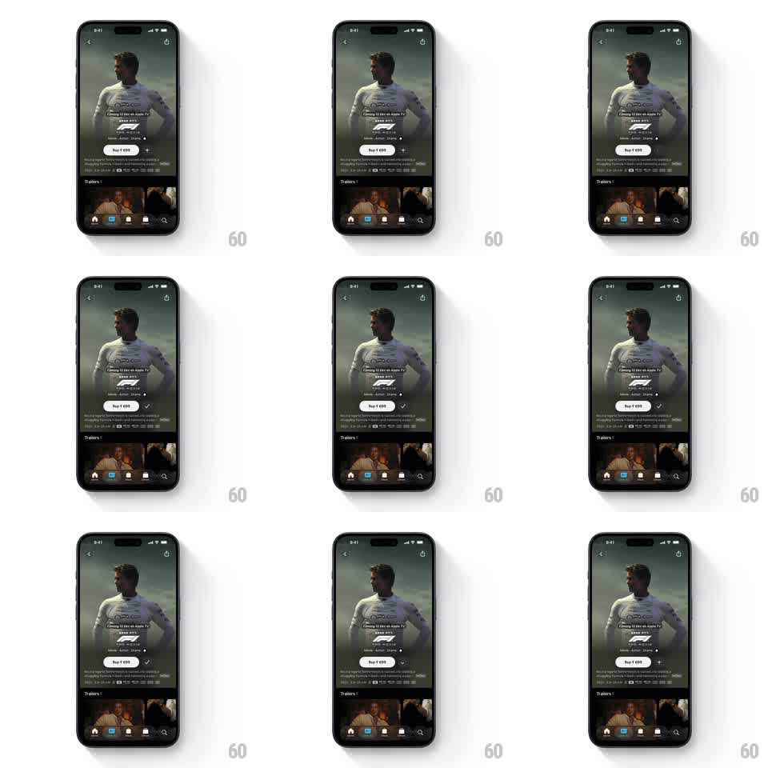

Media
Frame-by-frame

Rebuild this animation 1:1: Apple TV's Add to Watchlist micro-animation - the circular plus button on a title's detail page morphs its plus glyph into a checkmark with a single continuous vector path animation.

Rebuild this animation 1:1: Apple TV's Add to Watchlist micro-animation - the circular plus button on a title's detail page morphs its plus glyph into a checkmark with a single continuous vector path animation. ## Integration Integration: stack-agnostic spec - springs given as stiffness/damping, timed motions as duration + curve; map every value to your framework and animation library of choice. ## Scene Dark movie detail page (hero artwork, title lockup, Buy button, meta row, trailers strip, tab bar). Beside the Buy button sits a small circular frosted button holding a plus (+) glyph. ## Motion spec Pattern: icon path morph, ~500ms. - Tap: the plus's vertical stroke tips over and rotates ~45deg while its two strokes re-length into the check's arms - one continuous stroke morph (350ms, ease-in-out), no cross-fade. - Container: the circle does a subtle press (scale 0.9 -> 1, spring ~400/20) and its fill brightens a notch as the check lands. - Settle: the check holds; no badge, label, or toast appears. ## Calibration - The morph is the whole story - no rotation of the full button, no scale-pop of the glyph. - Stroke width stays constant through the morph. ## Reduced motion Instant glyph swap with a 150ms opacity cross-fade. ## Don't miss - The plus lives in a frosted circular button on the detail page - not a toolbar icon. - Nothing else on the page animates; the restraint is the design.